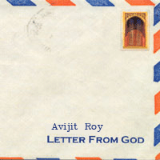

<html>

<head>
<meta http-equiv="Content-Type" content="text/html; charset=windows-1252">
<meta name="GENERATOR" content="Microsoft FrontPage 4.0">
<meta name="ProgId" content="FrontPage.Editor.Document">
<title>A Letter from God [God Responds in Mukto-mona Forum !] By Avijit Roy</title>
<META NAME="keywords" CONTENT="faith, philosophy, dogma, aparthib">

</head>

<body background="../../mukto_thinker_wm1.jpg" bgproperties="fixed">

<blockquote>
  <p class="MsoBodyText" align="center"><font color="#000080"><b style="mso-bidi-font-weight: normal"><font size="5">
  &nbsp;</font></b></font></p>
  <div align="center">
    <center>
                            <TABLE ID="NavigationBar2" BORDER=0 CELLSPACING=1 WIDTH=606 height="1">
                                <TR VALIGN=TOP ALIGN=LEFT>
                                    <TD WIDTH=101 height="1" align="center">
                                    <A HREF="../../index.html"><font size="2">
                                    </font></A></TD>
                                    <TD WIDTH=101 height="1" align="center">
                                    <A HREF="../articles.html"><font size="2">
                                    </font></A></TD>
                                    <TD WIDTH=101 height="1" align="center">
                                    <A HREF="../../Recent_Debate/recent_debate.html"><font size="2">
                                    </font></A></TD>
                                    <TD WIDTH=101 height="1" align="center">
                                    <A HREF="../../Special_Event_/special_event_.html"><font size="2">
                                    </font></A></TD>
                                    <TD WIDTH=101 height="1" align="center">
                                    <A HREF="../../Moderators/moderators.html"><font size="2">
                                    </font></A></TD>
                                    <TD WIDTH=101 HEIGHT=1 align="center">
                                    <A HREF="../../Forum/forum.html"><font size="2">
                                    </font></A></TD>
                                </TR>
                                <TR VALIGN=TOP ALIGN=LEFT>
                                    <TD WIDTH=101 align="center" bgcolor="#BFD8D9" height="6">
                                      <p align="left"><font size="2" color="#FFFFFF">&nbsp;<a href="../../women/index.html"><b>Women</b></a></font></TD>
                                    <TD WIDTH=202 bgcolor="#BFD8D9" align="center" colspan="2" height="6"><font size="2" color="#FFFFFF">
                                    <a href="../../human_rights/index.html"><b>Human
                                      Rights violation</b></a></font></TD>
                                    <TD WIDTH=202 bgcolor="#BFD8D9" align="center" colspan="2" height="6"><font size="2" color="#FFFFFF">
                                    <a href="../../personalities/index.html"><b>Great
                                      Personalities&nbsp;</b></a></font></TD>
                                    <TD WIDTH=101 HEIGHT=6 align="center" bgcolor="#BFD8D9">
                                      <p align="left"><font size="2" color="#FFFFFF">&nbsp;<a href="../../humour/index.html"><b>Humor</b></a></font></TD>
                                </TR>
                            </TABLE>
    </center>
  </div>
  <div align="center">
    <table cellSpacing="0" cellPadding="0" width="600" border="0">
      <tbody>
        <tr>
          <td colSpan="2" rowSpan="3">
          </td>
          <td class="k" bgColor="#6fb1d9"></td>
          <td align="right" colSpan="2" rowSpan="3">
          </td>
        </tr>
        <tr>
          <td class="h" bgColor="#eef5fa" height="22">
            <p align="center">&nbsp;</p>
          </td>
        </tr>
        <tr>
          <td class="k" width="1" bgColor="#6fb1d9">
          </td>
        </tr>
        <tr>
          <td class="k" width="1" bgColor="#6fb1d9">
          </td>
          <td width="18" bgColor="white"></td>
          <td bgColor="#FFFFFF">
  <table border="1" width="48%">
  </table>
  <p style="TEXT-ALIGN: center" align="center"><b><span style="FONT-SIZE: 16pt; COLOR: navy; mso-bidi-font-size: 13.5pt">A
  Letter from God<O:P>
  </O:P>
  </span></b></p>
  <p style="TEXT-ALIGN: center" align="center"><b><span style="COLOR: navy; mso-bidi-font-size: 13.5pt">[God
  Responds in Mukto-mona Forum !]</span></b></p>
  <p class="MsoNormal" style="TEXT-ALIGN: center; mso-margin-top-alt: auto; mso-margin-bottom-alt: auto" align="center"><b><span lang="EN-GB" style="FONT-SIZE: 16pt; COLOR: maroon; mso-bidi-font-size: 12.0pt; mso-ansi-language: EN-GB">By-
  Avijit Roy</span></b></p>
  <p style="TEXT-ALIGN: center" align="center">E mail : <a href="mailto:charbak_bd@yahoo.com">charbak_bd@yahoo.com</a>&nbsp;&nbsp;</p>
  <h3 style="MARGIN-LEFT: 36pt; MARGIN-RIGHT: 36pt; TEXT-ALIGN: justify"><font size="3"><span style="font-weight: normal">&nbsp;<O:P>
  I have received the following letter from God just yesterday. I am publishing
  it in Mukto-Mona as per His permission. Hope the letter will carry reader's
  interest.</span></font></h3>
  <h3 style="MARGIN-LEFT: 36pt; MARGIN-RIGHT: 36pt; TEXT-ALIGN: justify"><span style="font-weight: normal"><font size="3">~
  Av</font></span><font size="3"><span style="font-weight: normal">ijit&nbsp;&nbsp;<br>
  Nov&nbsp;17,&nbsp;2001&nbsp;</span></font></h3>
  <p style="MARGIN-LEFT: 36pt; MARGIN-RIGHT: 36pt; TEXT-ALIGN: justify">&nbsp;</p>
  <h3 style="margin-left: 36pt; margin-right: 36pt" align="center"><span style="FONT-WEIGHT: normal; COLOR: #006600"></O:P>
  </span></h3>
  <h3 style="MARGIN-LEFT: 36pt; MARGIN-RIGHT: 36pt; TEXT-ALIGN: justify"><span style="FONT-WEIGHT: normal; COLOR: #006600">&nbsp;<O:P>
  </O:P>
  </span></h3>
  <h3 style="MARGIN-LEFT: 36pt; MARGIN-RIGHT: 36pt; TEXT-ALIGN: justify"><span style="COLOR: #006600">My
  Dear followers,</span></h3>
  <p class="MsoNormal" style="MARGIN-LEFT: 36pt; MARGIN-RIGHT: 36pt; TEXT-ALIGN: justify; mso-margin-top-alt: auto; mso-margin-bottom-alt: auto"><span style="COLOR: #006600">I
  am critically observing this discussion forum <a href="http://groups.yahoo.com/group/mukto-mona"><b>Mukto-mona</b></a>
  sitting up here in heaven with no one to talk to.&nbsp; I mean really I want
  someone to talk to. It's really becoming very tough and boring for me passing
  my lonely days and lonely nights. Well, yes ... I can always converse with the
  angels, of course, but since I did not give them any&nbsp;free will and they
  are nothing but &quot;Hukumer Chakor&quot; (obedient servant), and since I&nbsp;myself
  have created every thought in their submissive minds, they are not very
  pleasing conversationalists for me.</span></p>
  <p style="MARGIN-LEFT: 36pt; MARGIN-RIGHT: 36pt; TEXT-ALIGN: justify"><span style="COLOR: #006600">Well
  again yes..., I (I mean my Christian entity) can talk with my&nbsp; son Jesus and
  with the &quot;third person&quot; of our holy trinity, the Holy Spirit, but
  since we three are all the same, there is nothing we can learn from each
  other. Moreover,&nbsp; Jesus sometimes sarcastically calls me
  &quot;Father,&quot; and hmmm....that feels good for sometime, but since we&nbsp;
  are nothing but &quot;Siamese twin&quot; born from the womb of the same
  surrogated mother, it doesn't mean to me much. And yes, I can also talk to
  Muhammad -the famous Muslim prophet, but that unfortunate guy is now burning
  in hell. I actually tried a lot to save him from burning hell-fire (cause,
  after all he is my &quot;peyaarey baandaa&quot; ) but some of&nbsp; the
  members -&nbsp; Ali Sina, Abul Kasem, fatemolla, Butcher from Mecca, Syed
  Kamran Mirza, Habib Sarwar, Khurshed Chowdhury, Taslima Nasrin, Susan, Ms.
  Muslim_apostate and many others firmly accused him for his&nbsp; <a href="http://www.faithfreedom.org/Articles/SKM/zeinab.htm">lascivious</a>
  and <a href="http://www.faithfreedom.org/Articles/sina/ayesha.htm">pedophilic</a>
  character, for his scandalous affairs with <a href="http://www.faithfreedom.org/Articles/sina/mariyah.htm">his
  maids</a> and <a href="http://www.faithfreedom.org/Articles/sina/safiyah.htm">slave
  girls</a>, for his <a href="http://www.faithfreedom.org/Articles/sina/jews.htm">massacre
  and genocides</a> and for his <a href="http://www.faithfreedom.org/Articles/sina/assassinations.htm">assassination</a>
  of his opponents etc. Some liberal members - Nadiya, Aparthib, Manab, Audrey,
  Eshon, Jahed, fatemolla&nbsp; felt pity realizing Muhammad's unfortunate fate and&nbsp;tried to
  raise their voice showing their anxiety - whether it was possible to give him
  a second chance, but the former members threatened me for even going for
  hunger strike if justice is ignored. I was at a loss and got really scared!
  Though I had repeatedly been attributed as &quot;Just&quot; as well as&nbsp;
  &quot;Merciful&quot; at the same time by my beloved followers, I realized&nbsp;that
  it was actually&nbsp;impossible to bring justice and mercy together in the
  field of trial in a law-court. In order to show mercy to Muhammad, justice
  will have to be ignored and in order to uphold justice, mercy will have to be
  sacrificed. What should I do? - this is a real dilemma I faced dealing with
  the fate of Muhammad. After thinking for a while, I decided to be in the
  side of justice sacrificing mercy.</span></p>
  <p style="MARGIN-LEFT: 36pt; MARGIN-RIGHT: 36pt; TEXT-ALIGN: justify"><span style="COLOR: #006600">Well...
  let's put aside Jesus or&nbsp;Muhammad for this moment. Let me better tell you
  what actually bothered me so that I hurriedly wanted to communicate with
  honorable Mukto-mona members. Actually some months ago, one of the prominent&nbsp;
  member of this forum - <b>Mr. Abul Kasem</b> <b><a href="http://humanists.net/avijit/article/an_email_to_allah.htm">directly
  e-mailed to me</a> .&nbsp; </b>I felt really humiliated. Cause, first of all,
  I could not find out how Mr. Kasem got my e-mail address. I thought some of my
  closed devoted servants only know my e-mail address. It seems I was totally
  wrong.&nbsp; I suspect some conspiracy is going on behind me between Mr. Kasem
  and Zibrial - one of my devoted angel in this territory.&nbsp; And secondly,&nbsp;in
  that e-mail he asked me some very hard questions; and I was not at all
  prepared for such sudden examination. To be frank, I could not answer a single
  question raised by Kasem at that time. Oh ! ... I miserably failed in that
  examination (not for the very first time, of course). But anyway,&nbsp; I did
  not wanted to&nbsp; respond Kasem at that time to make the situation even
  worse. I thought it would be better if I keep silent so that no body would&nbsp;know
  about my failure story. Meanwhile on 11th September the saddest tragedy
  happened. The whole world shocked to see&nbsp;such heinous acts and killing of&nbsp;so
  many innocent people. I got very angry. I immediately called Muhammad and
  asked him what have your devoted followers started doing all over the whole
  world ? Why killing of innocent people by my name ? Muhammad kept silent
  bending his neck down.&nbsp; I also got frustrated to observe the oppression
  on minority started in Bangladesh just after the BD election. My frustration
  increased while I found that some Hindu members and BJP supporters of this
  forum became very happy to find such effective tool to bash innocent Muslims.
  I was shocked. I began to search for a human - yes HUMAN - nothing much and of
  course nothing less than that !&nbsp; Searching for a&nbsp; &quot;Human&quot;
  in pure form who would be able to apply his rational thoughts overcoming&nbsp;
  his preoccupied narrow religious boundary. But I am sorry to say - I hardly
  found such person. Every where in this word only one message I'm getting now a
  day&nbsp; - &quot;KILL !&nbsp;&nbsp; KILL&nbsp; !!&nbsp;&nbsp; KILL&nbsp; (by
  the name of religion and compassionate and most merciful god)!!!&quot; ! Well
  being continuously agitated, and being unable to control&nbsp; my immense
  frustration,&nbsp; I have sent my<b><a href="http://groups.yahoo.com/group/mukto-mona/message/3274">
  angry message to Mukto-mona through Mr.Raman</a></b> on 10th November
  clarifying that I do not really care about what is written on those bullshit
  holy books - I just don't want to see killing of innocent people by my name,
  understand ? But alas! Situation never improved.&nbsp;&nbsp; Some of the
  fellow members showed his doubt <a href="http://groups.yahoo.com/group/mukto-mona/message/3262"><b>whether
  I am really compassionate and merciful or not</b></a>.&nbsp; Now <a href="http://groups.yahoo.com/group/mukto-mona/message/3281">Avijit</a>,
  <a href="http://humanists.net/avijit/article/who_created_you_aparthib.html">Aparthib</a>,
  <a href="http://groups.yahoo.com/group/mukto-mona/message/3289">Philosopher
  Knight (SS)</a> even started showing their doubt openly&nbsp; about my
  existence. Sad indeed (ei naa holey &quot;ghor koli kaal&quot; ? ).&nbsp; I
  think it is the high time to say you something about me.</span></p>
  <p style="margin-left: 36pt; margin-right: 36pt" align="center"></p>
  <p style="MARGIN-LEFT: 36pt; MARGIN-RIGHT: 36pt; TEXT-ALIGN: justify"><span style="COLOR: #006600">Dear
  believers of this forum,&nbsp;</span></p>
  <p style="MARGIN-LEFT: 36pt; MARGIN-RIGHT: 36pt; TEXT-ALIGN: justify"><span style="COLOR: #006600">I
  found some of you in this forum having a devoted passion for me (though each of you
  two have a different antithetical&nbsp; view about me, - some are the
  proponent of Islamic god, some are Christian god, some are Hindu god and even
  I have found some are the followers of Sikhism- and, not surprisingly all of
  you think that only your view on me is absolutely right, yet it makes me very
  happy that at least you didn't exhibit any doubt on my existence, and thereby
  showed some respect after all)&nbsp; Having said that, I wish to say - <i>I
  have few questions in my mind, and I thought you (“those who have profound
  faith on me”) would be the right person to ask. It will go like this:&nbsp;</i></span></p>
  <p style="MARGIN-LEFT: 36pt; MARGIN-RIGHT: 36pt; TEXT-ALIGN: justify"><span style="COLOR: #006600">You
  are educated &amp; learned. You have examined philosophy and world religions,
  and you have a degree which makes you qualified to carry on a discussion with
  someone at my level--not that I can't talk with anyone, even with the
  uneducated believers who fill the churches, mosques, temples&nbsp;and flatter
  me with endless petitions, but you know how it is. Sometimes we all crave
  interaction with a respected colleague. You have read the scholars. You have
  seen my devoted followers writing papers and publishing books about me, and
  you know me better than anyone else.</span></p>
  <p style="MARGIN-LEFT: 36pt; MARGIN-RIGHT: 36pt; TEXT-ALIGN: justify"><span style="COLOR: #006600">It
  might surprise you to think that I have some questions. No, not rhetorical
  questions aimed at teaching spiritual lessons, but some real, honest-to-God
  inquiries. This should not shock you because, after all, I created you in my
  image. Your inquisitiveness is an inheritance from me. You would say that
  love, for example, is a reflection of my nature within yourself, wouldn't you?
  Questioning is healthy, even if it comes from god, right ?</span></p>
  <p style="MARGIN-LEFT: 36pt; MARGIN-RIGHT: 36pt; TEXT-ALIGN: justify"><span style="COLOR: #006600">Somebody
  once said that we should prove all things, and hold fast that which is good.
  The questioner always wants to know the answer to the question, i.e. what is
  truth? In fact there will be no further questions once the truth is known. It
  is a rough but surest way&nbsp; of understanding &quot;<a href="http://humanists.net/avijit/aroj_ali/quest_for_truth.html"><b>Quest
  for Truth</b></a>&quot;. I hope my devoted followers would not mind by my
  questions.&nbsp;</span></p>
  <p style="MARGIN-LEFT: 36pt; MARGIN-RIGHT: 36pt; TEXT-ALIGN: justify">&nbsp;</p>
  <p style="MARGIN-LEFT: 36pt; MARGIN-RIGHT: 36pt; TEXT-ALIGN: justify"><span style="COLOR: #006600">My
  first question is this:</span></p>
  <h3 style="MARGIN-LEFT: 36pt; MARGIN-RIGHT: 36pt; TEXT-ALIGN: justify"><span style="COLOR: maroon">Where
  did I come from?</span></h3>
  <p class="MsoNormal" style="MARGIN-LEFT: 36pt; MARGIN-RIGHT: 36pt; TEXT-ALIGN: justify; mso-margin-top-alt: auto; mso-margin-bottom-alt: auto"><span style="COLOR: #006600">I
  find myself sitting up here in heaven, and I look around and notice that there
  is nothing else besides myself and the objects that I have created. I don't
  see any other creatures competing with me, nor do I notice anything above
  myself that might have created me, unless it is playing hide-and-seek. In any
  event, as far as I know (and I supposedly know everything being omniscient),
  there is nothing else but me and my creations. I have always existed, you say.
  I did not create myself, because if I did, then I would be greater than
  myself.</span></p>
  <p style="MARGIN-LEFT: 36pt; MARGIN-RIGHT: 36pt; TEXT-ALIGN: justify"><b><i><span style="COLOR: #006600">So
  where did I come from?</span></i></b></p>
  <p style="MARGIN-LEFT: 36pt; MARGIN-RIGHT: 36pt; TEXT-ALIGN: justify"><span style="COLOR: #006600">I
  know how you approach that question regarding your own existence. You notice
  that nature, especially the human mind, displays evidence of intricate design.
  You have never observed such design apart from a designer. You argue that
  human beings must have had a creator, and you will find no disagreement from
  me.</span></p>
  <p style="MARGIN-LEFT: 36pt; MARGIN-RIGHT: 36pt; TEXT-ALIGN: justify"><span style="COLOR: #006600">Then,
  what about me? Like you, I observe that my mind is complex and intricate. It
  is much more complex than your mind, otherwise I couldn't have created your
  mind. My personality displays evidence of organization and purpose. Sometimes
  I surprise myself at how wise I am. If you think your existence is evidence of
  a designer, then what do you think about my existence? Am I not wonderful? Do
  I not function in an orderly manner? My mind is not a random jumble of
  disconnected thoughts; it displays what you would call evidence of design. <i>If
  you need a designer, then why don't I?</i></span></p>
  <p style="MARGIN-LEFT: 36pt; MARGIN-RIGHT: 36pt; TEXT-ALIGN: justify"><span style="COLOR: #006600">You
  might think such a question is blasphemy, but most of the members of this
  forum thinks that <a href="http://groups.yahoo.com/group/mukto-mona/message/2129"><b>there
  is no such crime called &quot;blasphemy&quot;</b></a>. I can ask any <i>que</i>stion
  I want, and I think this is a fair one. If you say that <i>everything needs a
  designer and then again say that not everything (like Me) needs a designer</i>,
  aren't you contradicting yourself? By excluding me from the argument, aren't
  you bringing your conclusion into your argument? Isn't that circular
  reasoning? I am not saying I want to debate with your conclusion; how could I?
  At least I know that I do exist.&nbsp; I'm just logically wondering why it is
  proper for you to infer a designer while it is not proper for me.</span></p>
  <p style="MARGIN-LEFT: 36pt; MARGIN-RIGHT: 36pt; TEXT-ALIGN: justify"><span style="COLOR: #006600">If
  you are saying that I don't need to ask where I came from because I am perfect
  and omniscient while humans are entirely fallible, then <a href="http://humanists.net/avijit/article/god_design_argument_avijit.htm"><b>you
  don't need the design argument at all</b></a>, do you? You have <a href="http://humanists.net/avijit/article/who_created_you_aparthib.htm"><b>already
  assumed that I exist</b></a>. You can make such an assumption, of course, and
  I would not deny you the freedom. Such a priori and circular reasoning might
  be helpful or comforting to you, but it may not do the same for every members
  of this forum. Moreover, being a god I must utter the truth that it really
  doesn't help me figure out where I came from.</span></p>
  <p style="MARGIN-LEFT: 36pt; MARGIN-RIGHT: 36pt; TEXT-ALIGN: justify"><span style="COLOR: #006600">You
  say that I am eternally existent, and I suppose I would have no objection if I
  knew what it meant. It is hard for me to conceive of eternal existence. I just
  can't remember back (my &quot;previous or former birth before big bang&quot; )
  that far. It would take me an eternity to remember back to eternity, leaving
  me no time to do anything else, so it is impossible for me to confirm if I
  existed forever. And even if it is true, why is eternal greater than temporal?
  Is a long sermon greater than a short sermon? What does actually&nbsp;
  &quot;greater&quot; mean? Are fat people greater than thin people, or old
  greater than young?</span></p>
  <p style="MARGIN-LEFT: 36pt; MARGIN-RIGHT: 36pt; TEXT-ALIGN: justify"><span style="COLOR: #006600"><a href="http://groups.yahoo.com/group/mukto-mona/message/3090"><b>You
  think it is important that I have always existed</b></a>. I'll take your word
  for it, for now. My question is not with the duration of my existence, but
  with the <a href="http://humanists.net/avijit/article/origin_of_religious_belief.htm"><b>origin
  of my existence</b></a>. I don't see how being eternal solves the problem (one
  creative force has created another, then still the question remains open - how
  the first creative force came from the blue). I still want to know where I or
  my great grandfather came from.</span></p>
  <p style="MARGIN-LEFT: 36pt; MARGIN-RIGHT: 36pt; TEXT-ALIGN: justify"><span style="COLOR: #006600">I
  can only imagine one possible answer, and I would appreciate your reaction. I
  know that I exist. I know that I could not have created myself. I also know
  that as I am the only God, there is no higher God who could have created me.
  Since I can't look above myself, then perhaps I should look below myself for a
  creator. Perhaps--this is speculative, so bear with me--</span><b><span style="COLOR: red">perhaps
  you created me</span></b><span style="color: #006600">. Yes, I think it is the
  high time</span><span style="color: #009999"><b> </b></span><span style="color: #006600">you
  should&nbsp; reconsider a&nbsp; very widely used flawed statement - &quot;God
  has created man with his own image&quot;.&nbsp; Correct statement may be -
  &quot;Man has created god with his own imagination&quot;<span style="COLOR: #006600">,
  I think.&nbsp;</span></span></p>
  <p style="MARGIN-LEFT: 36pt; MARGIN-RIGHT: 36pt; TEXT-ALIGN: justify"><span style="COLOR: #006600">Don't
  be shocked by hearing those blasphemous statements. I mean to flatter you.
  Since I contain evidence of design, and since I see no other place where such
  design could originate, I am forced to look for a designer, or designers, in
  nature itself. You are a part of nature. You are intelligent--that is what
  your readers say. Why should I not find the answer to my question in you? Help
  me out on this.</span></p>
  <p style="MARGIN-LEFT: 36pt; MARGIN-RIGHT: 36pt; TEXT-ALIGN: justify"><span style="COLOR: #006600">Of
  course, if you made me, then I could not have made you, I think. The reason
  that I think I made you is because you made me to think I made you. Some of
  you have often said that a Creator can put thoughts in your mind. Isn't it
  possible that you have put thoughts in my mind, and now here we are, both of
  us, wondering where we each came from?</span></p>
  <p style="MARGIN-LEFT: 36pt; MARGIN-RIGHT: 36pt; TEXT-ALIGN: justify"><span style="COLOR: #006600">Some
  of you have said that the answer to this whole question is just a mystery that
  only God understands. Well, thanks a lot. The buck stops here. On the one hand
  you use logic to try to prove my existence (design argument, big bang,
  singularity, physics etc.), but on the other hand, when logic hits a dead end,
  you abandon it and invoke &quot;faith&quot; and &quot;mystery.&quot; Those
  words might be useful to you as place-holders for facts or truth, but they
  don't translate to anything meaningful as far as I am concerne</span><span style="color: #006600">d.
  <i>You can pretend that &quot;mystery&quot; signifies something terribly
  important, but to me it simply means you don't know.</i></span></p>
  <p style="MARGIN-LEFT: 36pt; MARGIN-RIGHT: 36pt; TEXT-ALIGN: justify"><span style="COLOR: #006600">Some
  of you assert that I did not &quot;come&quot; from anywhere. I just exist.
  However, I have also heard you say that <a href="http://groups.yahoo.com/group/mukto-mona/message/3284">NOTHING
  comes from NOTHING</a>. You can't have it both ways. I either exist or I
  don't. What was it that caused me to exist, as opposed to not existing at all?
  If I don't need a cause, then why do you? Since I am not happy to say that
  this is a mystery, I must accept the only explanation that makes sense.
  Logical explanation is - </span><b><span style="COLOR: red">You created me.</span></b></p>
  <p style="MARGIN-LEFT: 36pt; MARGIN-RIGHT: 36pt; TEXT-ALIGN: justify"><span style="COLOR: #006600">Is
  that such a terrible idea? I know that you think many other gods were created
  by humans: Zeus, Thor, Mercury, Elvis, Durga, Kali, Bishnu, Brohmma. You
  recognize that such deities originated in human mind because of uncertainty,
  desire, need, or fear. If the blessed beliefs of those billions of individuals
  can be dismissed as products of culture, then why can't yours? The<b> </b><i>Hindus
  created Brohmma, Persians created Mithra, the Jews created Yahweh, Muslims
  created Allah and you created me.</i><b><span style="mso-spacerun: yes">&nbsp;
  </span></b>A devoted<b> </b>Muslim thinks that his religion Islam is a true
  religion, you think yours one.&nbsp;&nbsp;But When did I confirm you that your
  religion is the truest religion, but Islam or Hinduism is not ? I have also
  seen that you do not wish to accept Taslima, Ali, Avijit, Jahed, Audrey and
  Aparthib's concept of Humanism, may be because of that Humanism does not care
  whether I really exist or not, right ?.&nbsp;&nbsp;<a href="http://humanists.net/avijit/article/does_religion_define_morality_aparthib.htm">Do
  you really think that God and religion should have a monopoly business
  defining morality</a>?<span style="mso-spacerun: yes">&nbsp; </span>If I am
  wrong about this, please straighten me out.</span></p>
  <p style="MARGIN-LEFT: 36pt; MARGIN-RIGHT: 36pt; TEXT-ALIGN: justify"><span style="COLOR: #006600">My
  second question is this:</span></p>
  <h3 style="MARGIN-LEFT: 36pt; MARGIN-RIGHT: 36pt; TEXT-ALIGN: justify"><span style="COLOR: maroon">What's
  my purpose of life ?</span></h3>
  <p class="MsoNormal" style="MARGIN-LEFT: 36pt; MARGIN-RIGHT: 36pt; TEXT-ALIGN: justify; mso-margin-top-alt: auto; mso-margin-bottom-alt: auto"><span style="COLOR: #006600">Maybe
  I made myself, maybe some other god made me, may be some impotent creative
  force made me, or maybe you made me--let's put that aside for now. I'm here
  now. This is important. But why am I here? Many of you look up to me for
  purpose in life, and I have often stated that your purpose in life is to
  please me. (Read the verses/slokes/suras in all regious scriptures) <i>If your
  purpose is to please me, what is my purpose? To please myself? Is that all
  there is to life?</i></span></p>
  <p style="MARGIN-LEFT: 36pt; MARGIN-RIGHT: 36pt; TEXT-ALIGN: justify"><span style="COLOR: #006600">If
  I exist for my own pleasure, then this is not &quot;godly&quot; - it's jus
  selfish. It makes it look as if I created you merely to have some living toys
  to play with. Isn't there some principle that I can look up to? Something to
  admire, adore, and worship? <i>Am I consigned for eternity to sit here and
  amuse myself with the worship of others? Or to worship myself? What's the
  point?</i></span></p>
  <p style="MARGIN-LEFT: 36pt; MARGIN-RIGHT: 36pt; TEXT-ALIGN: justify"><span style="COLOR: #006600">I
  have read your writings on the meaning of life, and don't misunderstand me,
  they make sense in the theological context of human religious goals, even if
  they don't have much practicality in the real world. Many of you feel that
  your purpose in life is to achieve perfection. Since you humans fall way short
  of perfection, by your own admission (and I agree), then self improvement
  provides you with a quest. It gives you something to do. Someday you hope to
  be as perfect as you think I am. <i>But since I am already perfect, by
  definition, then I don't need such a purpose. I'm just sort of hanging out, I
  guess. Then&nbsp; what will I be running for ?&nbsp;</i></span></p>
  <p style="MARGIN-LEFT: 36pt; MARGIN-RIGHT: 36pt; TEXT-ALIGN: justify"><span style="COLOR: #006600">Yet
  I still wonder why I'm here. It feels good to exist. It feels great to be
  perfect. But it gives me nothing to do. I created the universe with all kinds
  of natural LAWS OF PHYSICS that govern everything from quarks to galactic
  clusters, and it runs okay on its own.</span><span style="color: #006600"><i>
  I had to make these laws, otherwise I would be involved with a lot of
  repetitive busy work, such as pulling light rays through space, yanking
  falling objects down to the earth, sticking atoms together to build molecules,
  rejecting Shautal Borua's sexy postings from mukto-mona and a trillion other
  boring tasks more worthy of a slave than a master. You have discovered most of
  those laws, and might be on the verge of putting the whole picture together,
  and once you have done that you will know what I know: that there is nothing
  in the universe for me to do.</i></span><span style="COLOR: #006600"> It's
  boring sitting up here and doing nothing.</span></p>
  <p style="MARGIN-LEFT: 36pt; MARGIN-RIGHT: 36pt; TEXT-ALIGN: justify"><span style="COLOR: #006600">I
  could have created more universes and more laws for you, but what's the point?
  Once you have had ten children, do you need twenty? (I'm asking you, not the
  pope). Moreover, one&nbsp; Dillikaa laddu (a sweet from Delhi) is enough,
  don’t you agree? I am sure if you buy a large packet of laddu,&nbsp; the
  last piece would not obviously taste as sweet as the first one, right ?&nbsp;
  If more is better, then I am obligated to continue until I have fathered an
  infinite number of children, and an endless number of universes. If I must
  compel myself, then I am a slave.</span></p>
  <p style="MARGIN-LEFT: 36pt; MARGIN-RIGHT: 36pt; TEXT-ALIGN: justify"><span style="COLOR: #006600">I
  can't merely assign purpose to myself. Surely, I can bestow simple meaning on
  you--pleasing me, adulate me, pray for achieving perfection, whatever--and
  perhaps that is all that concerns you; but doesn't it bother you, just a
  little, that the source of meaning for your life has no source of its own? I
  mean, you do not find any purpose of your own life if I do not exist? And if
  this is true, then isn't it also true that ultimately you have no meaning for
  yourself either? If it makes you happy to demand an external reference point
  on which to hang your meaningfulness, why would you deny the same to me? I
  also want to be happy, and I want to find that happiness in something other
  than myself (some other god may be). Is that a sin?</span></p>
  <p style="MARGIN-LEFT: 36pt; MARGIN-RIGHT: 36pt; TEXT-ALIGN: justify"><span style="COLOR: #006600">On
  the other hand, if you think I have the right and the freedom to find
  happiness within myself and in the things I created, then why should you not
  have the same right? You, whom I supposed to create in my &quot;own&quot;
  image?</span></p>
  <p style="MARGIN-LEFT: 36pt; MARGIN-RIGHT: 36pt; TEXT-ALIGN: justify"><span style="COLOR: #006600">I
  know that some of you have proposed a solution to this problem. You call it
  &quot;love.&quot; You think I am lonely up here, and that I created humans to
  satisfy my longing for a relationship with something that is not myself. Of
  course, this will never work because it is impossible for me to create
  something that is not part of myself, but let's say that I try anyway. <i>Let's
  say that I create this mechanism called &quot;free will,&quot; which imparts
  to humans a choice.</i> If I give you the freedom (though this is stretching
  the word because there is nothing outside of my power) not to love me, then if
  some of you, a few of you, even one of you chooses to love me, I have gained
  something I might not have had. I have gained a relationship with someone who
  could have chosen otherwise. This is called love, you may say.</span></p>
  <p style="MARGIN-LEFT: 36pt; MARGIN-RIGHT: 36pt; TEXT-ALIGN: justify"><span style="COLOR: #006600">This
  is a great idea, on paper. In real life, however, it turns out that millions,
  billions of people have chosen not to love me, and that I have to do something
  with these infidels. I can't just un-create them. If I simply destroy all the
  unbelievers, I may as well have created only believers in the first place.
  Since I am omniscient, I would know in advance which of my creations would
  have a tendency to choose me, and this would produce no conflict with free
  will since those who would not have chosen me would have been eliminated
  simply by not having been created in the first place. (I could call it
  Supernatural Selection.) This seems much more compassionate than hell. But I
  cannot. Only one thing I can do now... I can put all the un- believers&nbsp;
  and infidels into the hell in their after life. Seriously, Is that what I am
  living for ?</span></p>
  <p style="MARGIN-LEFT: 36pt; MARGIN-RIGHT: 36pt; TEXT-ALIGN: justify"><span style="COLOR: #006600">You
  can't have a love relationship with someone who is not your equal.&nbsp; Tiger
  or Lion cannot have &quot;love&quot; relationship with goat or deer.&nbsp; If
  you humans don't have a guaranteed eternal soul, like myself, then you are
  inferior and worthless as companions. If I can't respect your right to exist
  independently, and your right to choose something other than me, then I
  couldn't love those of you who do choose me. I would have to find a place for
  all those billions of eternal souls who reject me, whatever their reasons
  might be. Let's call it &quot;hell,&quot; a place that is not-God, not-me. I
  would have to create this inferno, otherwise neither I nor the unbelievers
  could escape each other. Let's ignore the technicalities of how I could manage
  to create hell, and then separate it from myself, apart from whom nothing else
  exists. (It's not as though I could create something and then simply throw it
  away--there is no cosmic trash heap.) <i>The point is that since I am
  supposedly perfect, this place of exile must be something that is the
  opposite. It must be ultimate evil, pain, darkness, and torment.</i></span></p>
  <p style="MARGIN-LEFT: 36pt; MARGIN-RIGHT: 36pt; TEXT-ALIGN: justify"><span style="COLOR: #006600">If
  I created hell, then I don't like myself.</span></p>
  <p style="MARGIN-LEFT: 36pt; MARGIN-RIGHT: 36pt; TEXT-ALIGN: justify"><span style="COLOR: #006600">If
  I did create a hell, then it certainly would not be smart to advertise that
  fact. How would I know if people were claiming to love me for my own sake, or
  simply to avoid punishment? How can I expect someone to love me who is afraid
  of me in the first place? The threat of eternal torment might scare some
  people into obedience, but it does nothing to inspire love. If you treated me
  with threats and intimidations, I would have to reconsider my admiration for
  your character.</span></p>
  <p style="MARGIN-LEFT: 36pt; MARGIN-RIGHT: 36pt; TEXT-ALIGN: justify"><span style="color: #006600">How
  would you feel if you had brought some children into the world knowing that
  they were going to be tormented eternally in a place you built for them?<span style="COLOR: #006600">
  Could you live with yourself? Wouldn't it have been better not to have brought
  them into the world in the first place?&nbsp;&nbsp;</span></span></p>
  <p style="MARGIN-LEFT: 36pt; MARGIN-RIGHT: 36pt; TEXT-ALIGN: justify"><span style="COLOR: #006600">I
  know that some of you feel that hell is just a metaphor. Do you feel the same
  way about heaven?</span></p>
  <p style="MARGIN-LEFT: 36pt; MARGIN-RIGHT: 36pt; TEXT-ALIGN: justify"><span style="COLOR: #006600">Anyway,
  this whole love argument is wrong. First of all as an &quot;all-loving&quot;
  god, I should not suppose to get angry if someone does not pray to me. Since I
  am perfect, I should not&nbsp;lack anything. I shouldn't also supposed to be
  lonely. I don't need to be loved either. I don't even want to be loved because
  to want is to lack. To submit to the potential of giving and receiving love is
  to admit that I can be hurt by those who choose not to love me. If you can
  hurt me, I am not perfect. If I can't be hurt, I can't love. If I ignore or
  erase those who do not love me, sending them off to hell or oblivion, then my
  love is not sincere. If all I am doing is throwing the dice of &quot;free
  will&quot; and simply reaping the harvest of those who choose to love me, then
  I am a selfish monster. If you played such games with people's lives, I would
  call you insensitive, conceited, insecure, selfish and manipulative.</span></p>
  <p style="MARGIN-LEFT: 36pt; MARGIN-RIGHT: 36pt; TEXT-ALIGN: justify"><span style="COLOR: #006600">I
  know you have tried to get me off the hook. Some of You explain that Yours
  Truly is not responsible for the sufferings of unbelievers because rejection
  of God is their choice, not mine. They had a corrupt human nature, you
  explain. Well, who gave them their human nature? If certain humans decide to
  do wrong, where do they get the impulse? If you think it came from Satan, who
  created Satan? And why would some humans be susceptible to Satan in the first
  place? Who created that susceptibility? If Satan was created perfect, and then
  fell, where did the flaw of perdition come from? If I am perfect, then how in
  God's name did I end up creating something that would not choose perfection? A
  well&nbsp;said proverb goes -<span style="mso-spacerun: yes">&nbsp; </span>a
  good tree cannot bring forth evil fruit, agree ?.</span></p>
  <p style="MARGIN-LEFT: 36pt; MARGIN-RIGHT: 36pt; TEXT-ALIGN: justify"><span style="COLOR: #006600">Here
  is the title for your next theological tome: Was Bibi Hawa ( Eve) Perfect? If
  she was, she would not have taken the fruit. If she wasn't, I purposely
  created her imperfection.</span></p>
  <p style="MARGIN-LEFT: 36pt; MARGIN-RIGHT: 36pt; TEXT-ALIGN: justify"><span style="COLOR: #006600">Maybe
  you think all of this gives me a purpose--putting Humpty Dumpty back
  together--but it actually gives me a headache. (If you won't permit me a
  simple headache, then how can you allow me the pain of lost love?) . Sometimes
  <a href="http://humanists.net/avijit/article/when_allah_prays.htm">I really
  need to pray</a>. I could not live with myself if I thought my actions were
  causing harm to others. Well, I shouldn't say that also. Since I think you
  created me, I suppose I should let you tell me what I could live with. If you
  think it is consistent with my character to tolerate love and vengeance
  concurrently, then I have no choice. If you are my creator, then I could spout
  tenderness out of one side of my mouth and brutality out of the other. I could
  dance with my lover on the bones of my errant children, and pretend to enjoy
  it. I would be very human-like indeed.</span></p>
  <p style="MARGIN-LEFT: 36pt; MARGIN-RIGHT: 36pt; TEXT-ALIGN: justify"><span style="COLOR: #006600">I
  have a thousand more questions, but I hope you will allow me one more:</span></p>
  <h3 style="MARGIN-LEFT: 36pt; MARGIN-RIGHT: 36pt; TEXT-ALIGN: justify"><span style="COLOR: maroon">How
  do I decide what is right and wrong?</span></h3>
  <p class="MsoNormal" style="MARGIN-LEFT: 36pt; MARGIN-RIGHT: 36pt; TEXT-ALIGN: justify; mso-margin-top-alt: auto; mso-margin-bottom-alt: auto"><span style="COLOR: #006600">I
  don't know how I got here, but I'm here responding Mukto-mona. Let's just say
  that my purpose is to make good people out of my creations. Let's say that I
  am to help you learn how to be perfect like me, and that the best way is for
  you to act just like me, or like I want you to act. Your goal is to become
  little mirrors of myself. Won't that be splendid? I'll give you rules or
  principles, and you try to follow them. This may or may not be meaningful, but
  it will keep us both busy. I suppose that from your point of view this would
  be terribly meaningful, since you think I have the power to reward and punish.</span></p>
  <p style="MARGIN-LEFT: 36pt; MARGIN-RIGHT: 36pt; TEXT-ALIGN: justify"><span style="COLOR: #006600">I
  know that some of you&nbsp; think that I give rewards not for good deeds, but
  simply for believing Jesus as in my son or Muhammad as a prophet. Well both of
  them were convicted for their misdeeds; and yes..Jesus was not paroled for
  good behavior--he was simply released. (He had some illegal connections with
  some of my angels.) If my righteous judgment demanded absolute satisfaction,
  then Jesus should have paid the price in full like Muhammad, don't you think?</span></p>
  <p style="MARGIN-LEFT: 36pt; MARGIN-RIGHT: 36pt; TEXT-ALIGN: justify"><span style="COLOR: #006600">Beyond
  that, it is entirely incomprehensible to me why you think I would accept the
  blood of one individual for the crime of another. Is that fair? Is that
  justice? If you commit a felony, does the law allow your brother to serve the
  jail sentence for you? If someone burglarized your home, would you think
  justice was served if a friend bought you new furniture? Do you really think
  that I am such a bloodthirsty dictator that I will be content with the death
  of anyone for the crime of another? And are you so disrespectful of justice
  that you would happily accept a stand-in for your crimes? What about personal
  responsibility? It is tough to open my arms to welcome believers into heaven
  who have avoided the rap for their own actions. Something is way out of kilter
  here.</span></p>
  <p style="MARGIN-LEFT: 36pt; MARGIN-RIGHT: 36pt; TEXT-ALIGN: justify"><span style="COLOR: #006600">I
  have heard some of you saying that - <i>&quot;Ok, If God do not exist then we
  will not face any problem after death. But if God exists you people will go to
  hell. So safe and most rational choice is believing.&quot;</i> I could not but
  laugh hearing their arguments.&nbsp; Many religions&nbsp;in earth are
  offensive and totally antithetical to each other (but all claiming to be the
  “truest religion”). For example, Islam says that Christ was a man, but
  Christianity says that he was a god. So if I am a real Muslim god , all the
  Christian people like in Mukto-mona will go to hell because of not believing
  in my existence, but just for picking only a wrong religion and thereby
  following the wrong rule which was NOT prescribed by me. Muslim and Christians
  believe in one god but the Hindus believe in thousands of god and goddess.
  Muslims believe that idol-worship is a great sin but Hindus do it meticulously
  as a fundamental part of their religion.&nbsp; So you see both Abdullah and
  Mr. G-Sub cannot be true at the same time. Muslims slaughter cows in their
  religious festival whereas Hindus consider it as a great sin. So if, by any
  chance, I am the true Hindu god, then all the devoted Muslim members in
  Mukto-mona will go to hell cause they unnecessarily have slaughtered too many
  cows in their religious festivals !!!! And if I am a real Muslim god, well
  obviously I do not find any hope for G-Sub, Ustav, Kiran, Bishnu, Manab
  Kaushik or you. So you see, many devoted believers and god-loving people will
  go to hell because of just unintentionally following the wrong prescription.
  That's the crux.... I am really confused which god I am.</span></p>
  <p style="MARGIN-LEFT: 36pt; MARGIN-RIGHT: 36pt; TEXT-ALIGN: justify"><span style="COLOR: #006600">But
  let's ignore these objections. Let's assume that I will punish evil&nbsp; and
  good will be rewarded irrespective to any religion that you follow. But How do
  I know the difference? <i>I am the God. And no body have written any rule book
  for me to follow.</i><b> </b>May be you are thinking me to be the Final
  Authority. I must simply decide, and you must trust my decision. Am I free to
  decide whatever I want?</span></p>
  <p style="MARGIN-LEFT: 36pt; MARGIN-RIGHT: 36pt; TEXT-ALIGN: justify"><span style="COLOR: #006600">Help
  me out here. <i>How am I supposed to choose what is moral? Since I can't
  consult any authority or rule-book or any constitution, the thing to do, it
  appears, is to pick randomly.</i> Actions will become right or wrong simply
  because I declare them to be so. If I whimsically say that you should not make
  any graven or molten images of &quot;anything that is in heaven above, or that
  is in the earth beneath, or that is in the water under the earth,&quot; then
  that is that. If I decide that murder is right and compassion is wrong, you
  will have to accept it. That's why, Adnan also thought&nbsp;<a href="http://groups.yahoo.com/group/mukto-mona/message/3215">whether
  I am a real autocratic ruler</a> in one of his response to one of our members.&nbsp;</span></p>
  <p style="MARGIN-LEFT: 36pt; MARGIN-RIGHT: 36pt; TEXT-ALIGN: justify"><span style="COLOR: #006600">Is
  that all there is to it? I just decide, willy-nilly, what is right and what is
  wrong? Or worse, I decide based on whatever makes me feel good? I have read in
  some of your literature that you denounce such self-centered attitudes.</span></p>
  <p style="MARGIN-LEFT: 36pt; MARGIN-RIGHT: 36pt; TEXT-ALIGN: justify"><span style="COLOR: #006600">Some
  of you say that since I am perfect, I can't make any mistakes. Whatever I
  choose to be right or wrong will be in accordance with my nature, and since I
  am perfect, then my choices will be perfect. In any event, my choices will
  certainly be better than your choices, you feel. But what does
  &quot;perfect&quot; mean?&nbsp;</span> <span style="COLOR: #006600">If I am
  perfect, then there are certain things that I cannot do. If I am not free to
  feel envy, lust, or malice, for example, then I am not omnipotent. I cannot be
  more powerful than you if you can feel and do things that I cannot.</span></p>
  <p style="MARGIN-LEFT: 36pt; MARGIN-RIGHT: 36pt; TEXT-ALIGN: justify"><span style="COLOR: #006600">Additionally,
  if you feel that God is perfect, by nature, what does &quot;nature&quot; mean
  then? The word is used to describe the way things are or act in nature, and
  since you think I am above nature, you must mean something else, something
  like &quot;character,&quot; or &quot;attributes.&quot; To have a nature or
  character means to be one way and not another. It means that there are limits.
  Why am I one way and not another? How did it get decided that my nature would
  be what it is? If my &quot;nature&quot; is clearly defined, then I am limited.
  I am not God. If my nature has no limits, as some of you suggest, then I have
  no nature at all, and to say that God has such-and-such a nature is
  meaningless. In fact, if I have no limits, then I have no identity; and if I
  have no identity, then I do not exist.&nbsp;<i> In fact</i><b> <a href="http://www.lhup.edu/~dsimanek/sci_relig.htm">why
  the most reputed scientists still today do not believe in ME</a> - </b><i>but
  believes in NATURE and natural laws&nbsp;are widely understood.</i><b>&nbsp; </b>But
  it seems it does not satisfy you. You complained that Hawking is not an
  atheist. But I didn't find Hawking is a theist either. He never prayed to me
  single time. Neither does he believe in my created heaven, hell or Satan. Then
  what sort of god he believes in ? Well, still I remember when he was a guest
  on Larry King Live, over a year ago, he was asked by Larry if he believed in
  me (God). <i>He answered by saying that he equates god with the laws of
  nature.</i> <b><a href="http://www.positiveatheism.org/mail/eml9165.htm">He
  also said</a> </b><i>that he believes everything in the universe can be
  explained scientifically.</i><b> </b>Perhaps you confused Hawking's famous
  statement&nbsp;</span> <span style="COLOR: #006600">&quot;Mind of God&quot;&nbsp;
  in his famous book &quot;The brief History of Time&quot;&nbsp;&nbsp; He
  actually used this term in a metaphorical sense of some creative force. [Word
  of caution here -&nbsp; this creative force is just an assumption and haven't
  proved yet , and moreover it is just an impotent super force which can't be
  termed as &quot;god&quot; in a real sense to confuse with me. Just like
  gravitational force or elecro-magnetic force cannot be and should not be
  termed as god.]&nbsp;&nbsp; Remember, Einstien also once said &quot;god does
  not play with dice&quot;. By this he meant that there are no random motions in
  the Universe; all Nature conforms to mathematical laws. This is the God of
  Spinoza which is totally different from me. <i>His definition of God was just
  another word for Nature and its laws (laws of physics).</i> Einstein did not
  believe in a super-intelligence, the existence of the Trinity, the miracles of
  Jesus, the immortality of the soul, astrology, Muhammed's teaching, Phrophet's
  meraaj, Phrophet's moon-splitting, Noah's arch, existence of angel and Satan,&nbsp;
  Ram-Ravan-Hanuman or Adam- Eve story.&nbsp;&nbsp; How can you then try to convince the entire group
  that these two scientists believed exactly in me ?</span></p>
  <h3 style="MARGIN-LEFT: 36pt; MARGIN-RIGHT: 36pt; TEXT-ALIGN: justify"><span style="COLOR: maroon">Who
  am I?</span></h3>
  <p style="MARGIN-LEFT: 36pt; MARGIN-RIGHT: 36pt; TEXT-ALIGN: justify"><span style="COLOR: #006600">This
  brings me back to the conundrum: if I don't know who I am, then how can I
  decide what is right? Do I just poke around in myself until I come up with
  something?</span></p>
  <p style="MARGIN-LEFT: 36pt; MARGIN-RIGHT: 36pt; TEXT-ALIGN: justify"><span style="COLOR: #006600">There
  is one course I could pursue, and some of you have suggested this for
  yourselves. I could base my pronouncements on what is best for you humans. You
  people have physical bodies that bump around in a physical world. I could
  determine those actions that are healthy and beneficial for material beings in
  a material environment.<i> I could make morality something material: something
  that is relative to human life, not to my whims. I could declare (by
  conclusion, not by edict) that harming human life is bad, and that helping or
  enhancing human life is good.</i> This would be like providing an operation
  manual for something I designed and manufactured. It would require me to know
  all about human nature and the environment in which you humans live, and to
  communicate these ideas to you.</span></p>
  <p style="MARGIN-LEFT: 36pt; MARGIN-RIGHT: 36pt; TEXT-ALIGN: justify"><span style="COLOR: #006600">This
  makes a lot of sense, but it changes my task from one of determining morality
  to one of communicating morality. <i>If morality is discovered in nature, then
  you don't need me, except maybe to prod you along. I saw to it that you have
  capable minds with the ability to reason and do science. There is nothing
  mysterious about studying how humans interact with nature and with each other,
  and you should be able to come up with your own set of rules. </i>Some of you
  tried this rational reasoning even before Muhammad, Jesus or Moses.&nbsp;
  Professor Ajoy K Roy <a href="http://humanists.net/avijit/article/debate/response_ajoy_why_I_remain_atheist.htm">in
  one of his mails</a> informed the group that Nastikata or atheism, as a
  philosophy was developed by Dhisan before Gautam Budha. According to Dhisan
  the Universe exists, but not ME - the creator;&nbsp; The creation of life is a
  specific process of nature and it evolves out of the composite composition of
  four elements. With death all ends. Perception is the only direct proof of
  existence. Even if your rules contradict mine, I<i> couldn't claim any higher
  authority than you. At least you would be able to give reasons for your rules,
  which I can only do by submitting to science myself.</i></span></p>
  <p style="MARGIN-LEFT: 36pt; MARGIN-RIGHT: 36pt; TEXT-ALIGN: justify"><span style="COLOR: #006600">If
  morality is defined by how human beings exist in nature, then you don't need
  me at all. I am off the hook! From what I have read, most of you have your
  feet on the ground with no help from me. I could hand down some stone tablets
  containing what I think is right and wrong, but it would still be up to you to
  see if they work in the real world. <i>I think we all agree that grounded
  reason is better than the whim of an ungrounded faith or deity.</i></span></p>
  <p style="MARGIN-LEFT: 36pt; MARGIN-RIGHT: 36pt; TEXT-ALIGN: justify"><span style="COLOR: #006600">This
  is a wonderful approach, but what bothers me is that while this may help you
  know what is moral in your environment, it doesn't help me much. I don't have
  an environment. I'm out here flapping in the breeze. I envy you.</span></p>
  <p style="MARGIN-LEFT: 36pt; MARGIN-RIGHT: 36pt; TEXT-ALIGN: justify"><span style="COLOR: #006600">Nor
  does the <a href="http://groups.yahoo.com/group/mukto-mona/message/3156">humanistic
  approach</a>&nbsp;specified by some of the members in this forum help those of
  you who want morality to be rooted in something absolute, outside of
  yourselves. It must be frightening for you who need an anchor to realize that
  there is no bottom to the ocean. <i>Well, it's frightening for me also. I
  don't have an anchor of my own. That's why I'm asking for your help.</i></span></p>
  <p style="MARGIN-LEFT: 36pt; MARGIN-RIGHT: 36pt; TEXT-ALIGN: justify"><span style="COLOR: #006600">Thank
  you for reading my letter in spite of&nbsp; your busy schedule. Please answer
  at your convenience. I have all the time in the world. My e-mail address - <a href="mailto:GOD@heaven.com">GOD@heaven.com</a>&nbsp;</span></p>
  <p style="MARGIN-LEFT: 36pt; MARGIN-RIGHT: 36pt; TEXT-ALIGN: justify"><span style="COLOR: #006600">Sincerely,</span></p>
  <p style="MARGIN-LEFT: 36pt; MARGIN-RIGHT: 36pt; TEXT-ALIGN: justify"><span style="COLOR: #006600">Yours
  Truly</span></p>
  <p style="MARGIN-LEFT: 36pt; MARGIN-RIGHT: 36pt; TEXT-ALIGN: justify"><b><span style="COLOR: #006600">GOD</span></b></p>
  <p style="MARGIN-LEFT: 36pt; MARGIN-RIGHT: 36pt; TEXT-ALIGN: justify"><span style="COLOR: #006600">[Writing
  from heaven, but burning like hell!]</span></p>
  <p style="MARGIN-LEFT: 36pt; MARGIN-RIGHT: 36pt; TEXT-ALIGN: justify"></p>
  <div style="BORDER-RIGHT: medium none; PADDING-RIGHT: 0cm; BORDER-TOP: medium none; PADDING-LEFT: 0cm; PADDING-BOTTOM: 1pt; BORDER-LEFT: medium none; PADDING-TOP: 0cm; BORDER-BOTTOM: windowtext 2.25pt double">
    <p style="BORDER-RIGHT: medium none; PADDING-RIGHT: 0cm; BORDER-TOP: medium none; PADDING-LEFT: 0cm; PADDING-BOTTOM: 0cm; MARGIN-LEFT: 36pt; BORDER-LEFT: medium none; MARGIN-RIGHT: 36pt; PADDING-TOP: 0cm; BORDER-BOTTOM: medium none; TEXT-ALIGN: justify; mso-border-bottom-alt: double windowtext 2.25pt; mso-padding-alt: 0cm 0cm 1.0pt 0cm">&nbsp;<O:P>
    </O:P>
    </p>
  </div>
  <p style="TEXT-ALIGN: justify"><b>Courtesy : </b><i>Losing Faith In Faith:
  From Preacher To Atheist</i>, by Dan Barker and <i>The Case Against God:
  Science and the Falsifiability Question in Theology,</i> by By Massimo
  Pigliucci. I was highly encouraged by the above two articles to write the
  letter; and I used&nbsp; many of their&nbsp; arguments to enrich my article.</p>
  <p align="center"><b><a href="http://groups.yahoo.com/group/mukto-mona/message/20514">Comment
  on the article</a></b></p>
  <p align="justify">
&nbsp;</td>
          <td width="14" bgColor="white"></td>
          <td class="k" width="1" bgColor="#6fb1d9">
          </td>
        </tr>
        <tr>
          <td vAlign="top" align="left" colSpan="2" rowSpan="2">
          </td>
          <td bgColor="white"></td>
          <td vAlign="top" align="right" colSpan="2" rowSpan="2">
          </td>
        </tr>
        <tr>
          <td class="k" bgColor="#6fb1d9"></td>
        </tr>
      </tbody>
    </table>
  </div>
</blockquote>

<p class="MsoNormal" align="center">[<A HREF="../../index.html">Mukto-mona</A>]  [<A HREF="../articles.html">Articles</A>]  [<A HREF="../../Recent_Debate/recent_debate.html">Recent&nbsp;Debate</A>]  [<A HREF="../../Special_Event_/special_event_.html">Special&nbsp;Event&nbsp;</A>]
                              [<A HREF="../../Moderators/moderators.html">Moderators</A>]  [<A HREF="../../Forum/forum.html">Forum</A>]</p>

</body>

</html>